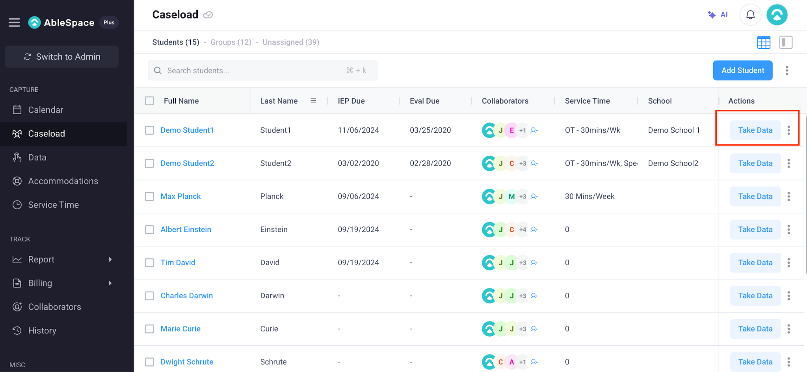

Candidate: Aditya Kumar | Role: Full Stack Developer (Fresher)
Live Deployed URL: https://ablespaceassisment.netlify.app/
AbleSpace is a specialized Special Education (SpEd) management platform engineered for Special Education Teachers, Speech-Language Pathologists (SLPs), Occupational Therapists (OTs), and Behavior Specialists (BCBAs). The platform streamlines IEP goal tracking, caseload management, data collection, and compliance reporting.
The "Take Data" button on the Caseload tab serves as the primary operational entry point for practitioners entering instructional or therapy sessions with students.
As shown in the screenshot below from the AbleSpace platform, the Caseload roster presents student profiles, IEP due dates, evaluation due dates, multidisciplinary team collaborators, and allocated service times:

[ Caseload Tab Roster ] ──> Click [ Take Data ] ──> [ Session Active View ]
│
┌────────────────────────────────────────────────────────────┘
│
├──> 1. Goal Domain Selection (Academic, Speech/Language, Social, Motor, Behavioral)
├──> 2. Trial-Based Accuracy Tallying (+ / - buttons for DTT trials)
├──> 3. Prompt Level Hierarchy Logging (Independent ➔ Verbal ➔ Gestural ➔ Physical)
├──> 4. Duration & Latency Stopwatch Timers (Session time & initiation latency)
└──> 5. Qualitative Clinical Notes & Accommodation Tags
│
┌────────────────────────────────────────────────────────────┘
│
v
[ Click Save Session ] ──> [ Auto-Sync to IEP Progress Reports & Graphs ]
| ID | Feature Proposal | Primary User Value | Complexity |
|---|---|---|---|
| IMP-1 | One-Handed Quick Data Mode | Faster trial logging during active instruction | Low (UI Layout) |
| IMP-2 | Multi-Student Group View | Eliminates context switching in group therapy | Medium (State Management) |
| IMP-3 | Voice-Assisted Entry | Hands-free data logging during physical therapy | Medium (Web Speech API) |
| IMP-4 | Offline-First Sync Queue | Prevents session data loss during Wi-Fi drops | Medium (IndexedDB) |
| IMP-5 | Real-Time Mastery Banners | Immediate IEP milestone feedback | Low (Threshold Calculation) |